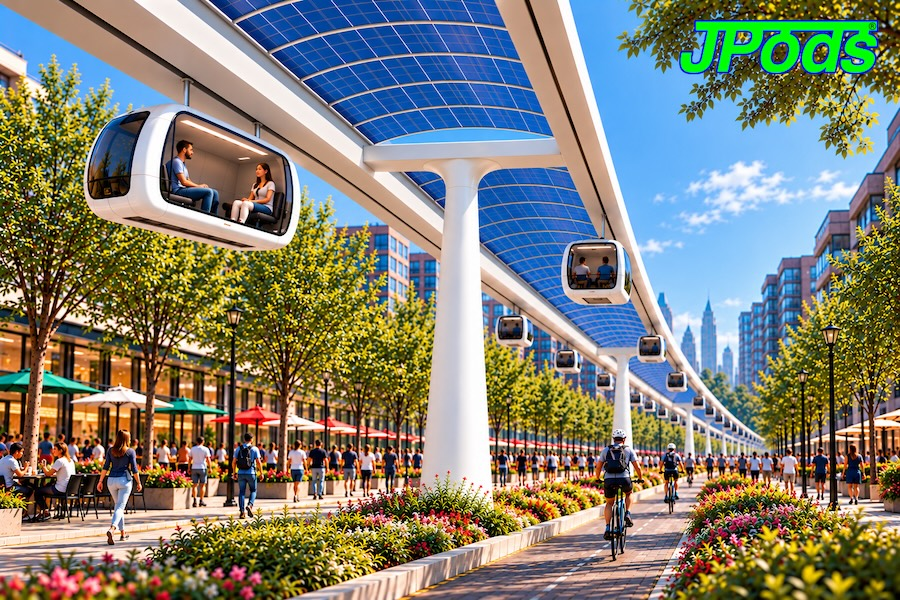
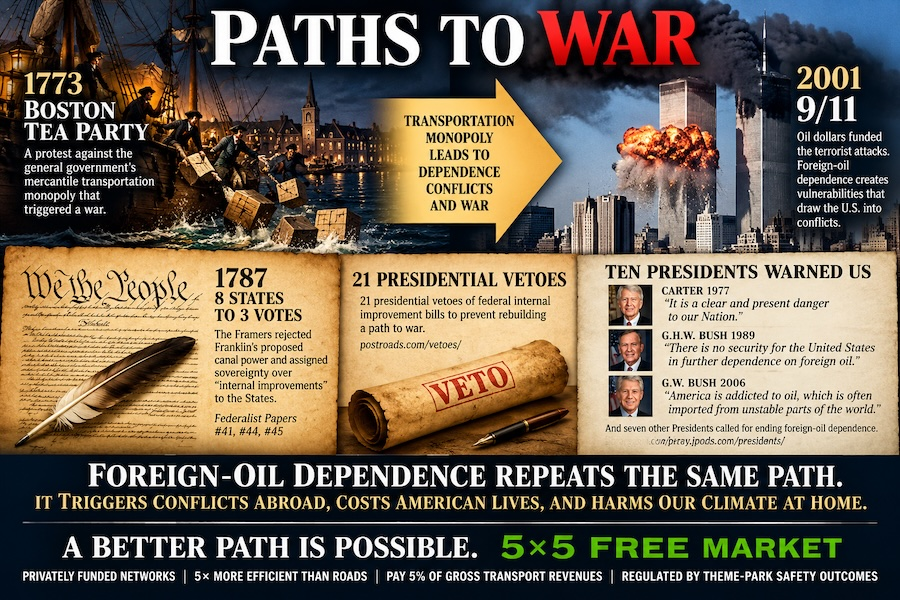
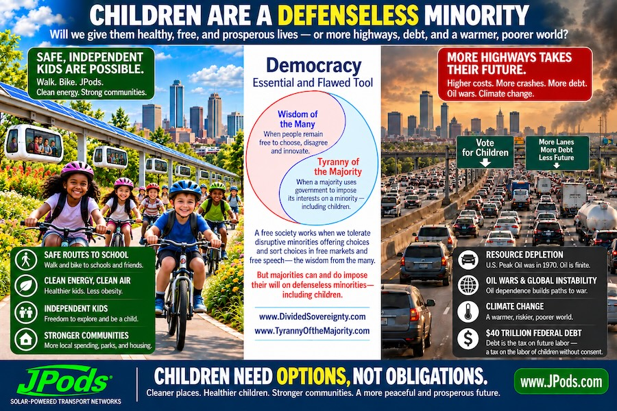
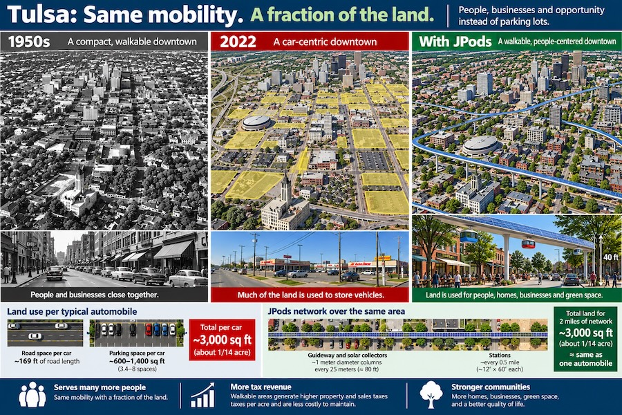
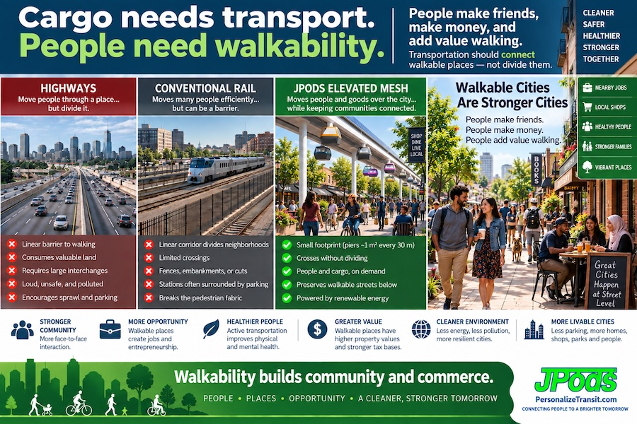
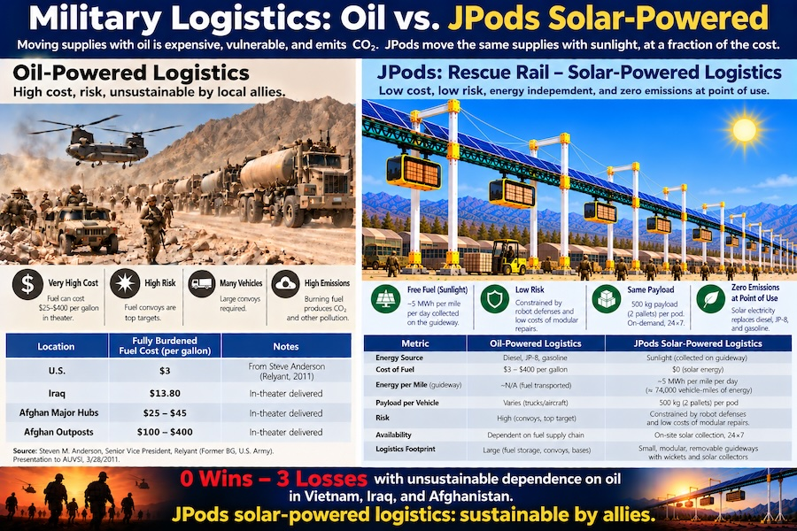

One idea under all of it
The individual is sovereign. Governments, corporations and platforms are agents with limited, enumerated, revocable permissions, not owners of our lives. Everything on this site applies that one idea to a different domain: energy, transportation, commerce, elections, and the Constitution.
Two companions follow from it. The wisdom of the many, people free to choose, disagree and innovate, chooses better than the wisest single planner. And usufruct, Jefferson's word: we may use a resource for profit, but only without harm, returning it in like or better condition for Posterity.
Only fools pee in their children's only well.
The root cause
Life requires energy. Less energy, less life. The question is who decides how a society spends it.
On September 14, 1787, the Constitutional Convention voted eight states to three that the States, not the general government, are sovereign over "internal improvements." The Federal power was limited to "post Roads," with "No Preference" for one state's commerce over another's. Twenty-one Presidential veto messages, beginning with Madison, enforced that limit.
In 1916 the Federal-Aid Highway Act broke it. Washington began taxing everyone to build one kind of network, and our cities were centrally planned around burning energy to move two tons of steel to move one person. A bread line in Soviet Russia and a traffic jam in Tulsa are the same failure in different commodities.
The consequences followed in a chain:
- Oil addiction. U.S. oil production per person peaked in 1970. Ten Presidents in a row called for ending foreign oil dependence as a threat to national security. None of those calls were answered.
- Oil wars. Oil dollars funded the 9/11 attacks. We have fought for oil since 1991, and our record in Vietnam, Iraq and Afghanistan, all wars carried on an unsustainable dependence on oil, is zero wins and three losses.
- Climate change. Road transportation is a leading driver of warming. It is the predictable result of a mandate to burn oil.
- Traffic and sprawl. Only about 1.2% of U.S. urban land is still walkable, yet it produces about 20% of GDP. We make money and friends walking.
- Debt. Debt is a tax on future labor. Debt that cannot be repaid within 19 years, a generation, is imposed on children without their consent: taxation without representation.

Three paths to war, rebuilt
The Founders had seen three conditions that drive a nation to war with itself. All three are back.
- Taxation without representation, the American Revolution. Today: trillions in debt mortgaged onto children who cannot vote.
- Illicit energy, the Civil War, fought over slave energy. Today: foreign oil, and the wars fought to keep it flowing.
- Wealth transferred from the many to the few, the French Revolution. Today: inflation, money printing and crony capitalism that debase the value of work.
All three have the same victim.

Children are the defenseless minority. Democracy is an essential tool, and a flawed one: the wisdom of the many works only while people remain free to choose and the majority cannot impose its costs on those who have no vote. The Constitution's enumerated limits were the fence around that commons. When the fences come down, children pay.
The remedy: restore the fences
Divided Sovereignty
The Constitution divides the monopoly of violence three ways: the Federal government for war, peace and defense; the States for crimes, civil disputes and internal improvements; and We the People, who keep everything not surrendered. Madison, Federalist #51: "Ambition must be made to counteract ambition." Hamilton, Federalist #28: when either government invades our rights, the people throw their weight to the other.
Repeal what consolidated power
In 1913 the 16th Amendment opened Federal taxing beyond defense. The 17th ended State representation in the Senate, cutting the cost of corruption from buying half a state legislature to funding one Senate campaign. The 18th, though repealed, left Federal policing of private commerce. Restoring State representation in the Senate is the single most important structural repair.
The jury, the fourth branch
Jefferson called trial by jury "the only anchor ever yet imagined by man, by which government can be held to the principles of its constitution." A jury cannot be consolidated by executive order or captured by a lobby. I propose four verdicts: not guilty, guilty, nullified because the law is unjust, and nullified because its application is unjust. That would put the people's judgment into the common-law record, one case at a time.
Oklahoma's own Constitution already says it: "Perpetuities and monopolies are contrary to the genius of a free government, and shall never be allowed."
The build: let people compete to do better
Restoring the Constitution is half of it. The other half is offering something better and letting people choose it.
JPods: the Physical Internet
JPods are small, solar-powered, computer-routed pods on light elevated guideways. They are on-demand like the Internet, with freight-rail efficiency. They carry people, packages and supplies of up to 500 kg, and haul waste away on the same continuous flow. A city's circulatory system, not a weekly truck.
- Privately funded. Networks are built with private capital, not taxes. In Tulsa, the proposal is a $6.9 billion privately funded mesh network to roughly double the Walk Score across most of the county.
- The 5×5 Free Market. At least 5× more efficient than roads; pays 5% of gross transport revenue; regulated by theme-park safety outcomes, not by central planners.
- Middle mile, not last mile. JPods move people station to station. Walking, bikes and scooters reach the door, and they become safe again once enough cars are off the street.

Cities have about three times the lane-miles of road they can afford to maintain. Car-centric land loses money for the city; walkable land pays for itself many times over. Converting parking to homes, shops and parks is how a city gets back to fiscal health. Many Americans can no longer afford the car the infrastructure requires.

From mud to sunlight: what a soldier sees
Fuel convoys were among our most dangerous missions. The same guideway that serves a city can move supplies on sunlight, for disaster relief, wildfire response and military logistics. Allies can sustain it without our oil.

WebClerk: local commerce people can find
Amazon's real monopoly is not price; it is discoverability. WebClerk is free, open-source commerce software that publishes a local store's real inventory to the web by distance. The part in stock ten minutes away becomes as easy to find as the one shipped from across the country. The retailer owns the customer relationship, with no platform in the middle. JPods keeps that store stocked without a big warehouse.
Measure what matters. What gets measured gets done. I would judge a city by its Walk Score and its net tax revenue per acre, and judge a policy by whether children inherit more choices or more debt. Excellence is the process of relentlessly improving. Start small, measure honestly, and improve.
Elections 2026
None of this matters if the elections are not free. States are sovereign over their elections, and Oklahoma's officials have sworn an oath to the Constitution. Read what I am asking of Oklahoma candidates this November →
The sites
Each site goes deeper into one piece of the argument.